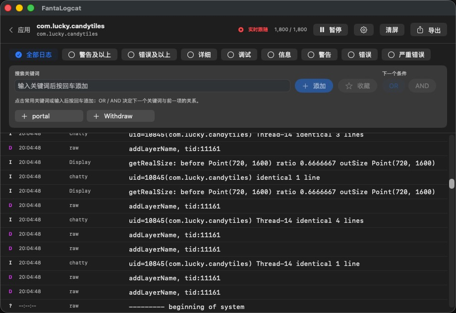

主进程与子进程，
一条都不漏。
主机端按 PID 集合过滤，保留多进程应用的完整日志与堆栈，不再受重复 --pid 行为影响。
实时 Logcat、APK 安装、屏幕镜像、Deeplink、Activity 快捷入口与设备工具，被整理进一个安静、可靠的 Mac 工作台。

FantaLogcat 在 Mac 端解析多行日志与堆栈，跟踪应用全部进程，并在 PID 变化后自动恢复采集。
Scroll 向下查看 Logcat 的三个关键能力
主机端按 PID 集合过滤，保留多进程应用的完整日志与堆栈，不再受重复 --pid 行为影响。
周期性刷新进程映射，PID 变化后重新加载近期日志；ADB 瞬时错误按退避策略恢复。
按等级与 OR / AND 关键词组合筛选，搜索结果和完整事件始终保持一致。
不再反复输入命令、记包名或翻历史记录。选择设备后，常用调试能力随时可用。
覆盖安装、降级、测试包与权限选项；安装后直接查看版本并打开应用。
自动管理官方组件，防止重复启动，并能从应用内关闭镜像。
给调试入口命名、搜索、编辑与复用，支持直接粘贴完整 ADB 命令。
粘贴、校验、压缩并发送 JSON；普通文本支持复制与快速清空。
com.game/.ProductSettingsActivitymygame://campaign?id=7{ "environment": "staging" }最近使用、搜索选择、启动、关闭、重启与清除数据。
设备截图保存后直接打开，或在 Finder 中定位。
屏幕、电量、存储、ABI、Android 版本与可用的 GAID。
浅色、深色或自动跟随 macOS，并可即时预览。
导出前默认识别常见 token、密码与密钥模式。
环形缓存限制事件数量和文本大小，避免内存无限增长。
适用于 Apple 芯片 Mac，支持 macOS 13 及以上版本。FantaLogcat 会按需下载并校验 Google 官方 Platform-Tools。